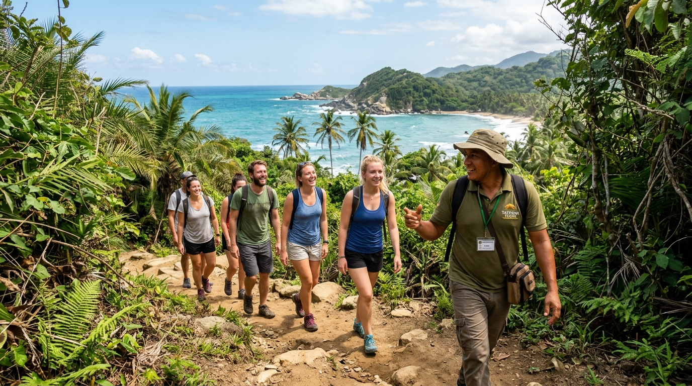

Everything you need to know about park entry fees, avoiding ticket scams, navigating jungle trails, and skipping the 2-hour entrance line with a certified local guide.
Don't fall for online scams. Understand how official entrance tickets actually work.
Do NOT trust third-party websites claiming to sell official park entry tickets on the internet.
By regulation of Parques Nacionales Naturales de Colombia, official park entrance passes are paid strictly in person at the park gates (El Zaino or Palangana entrances) in cash or credit card upon arrival.

The queue at the El Zaino park entrance in the morning heat can easily take 1 to 2+ hours as hundreds of travelers line up to pay fees and verify IDs.
While you cannot buy entry passes online yourself, when you book a certified guided tour with Girona Travels, your local guide arrives at the entrance booth early in the morning and handles the ticket purchasing line on your behalf.
Combine professional local guides, seamless gate access, and comfortable lodging.
Full-day guided hike through jungle trails to Cabo San Juan beach. Includes early ticket queue handling, bilingual guide, and fruit tasting.
Includes 1 night stay near park gate at Kasankala / Casa Isabella, morning queue fast-track, guided trek to Arrecifes & Cabo San Juan, and transport.
Private certified guide exploring ancient Chairama (Pueblito) ruins, spotting howler monkeys, toucans, and visiting secluded beaches.
Plan your route from the main El Zaino entrance to iconic beaches.
The iconic twin-cove beach featuring the famous hammock hut on the granite hill. Safe for swimming, calm turquoise waters.
Dramatic coastline with massive granite boulders. Strong dangerous currents—swimming is prohibited, but scenery is breathtaking.
A natural reef barrier creates a tranquil, pool-like bay perfect for swimming and snorkeling with colorful tropical fish.
An ancient Tayrona indigenous stone village nestled in the high jungle. High chance of spotting howler monkeys and toucans.
Stay minutes from the park gate to enjoy early morning access and relaxing luxury.
Immersed in lush nature right near the El Zaino entrance. Features eco-luxury rooms, pool, and direct tour departure point.
View Rooms at ParqueTayrona.org →Boutique heritage lodging combining historic charm, swimming pools, and personalized tour concierge services.
View Availability →Premium hotel accommodations offering full transport packages, park tour booking, and gourmet dining.
Explore Kali Hotels →No. Official entrance passes cannot be reserved online in advance by tourists. Passes must be purchased in person at the park gates (El Zaino or Palangana) using cash (COP) or credit card.
When you book a certified guided tour with us, your guide arrives at the ticket booth early in the morning before the park opens to purchase entry passes on your behalf. When you arrive, you walk past the main queue directly into the park!
Yes. Daily medical insurance is mandatory for all visitors and costs approximately 6,000 COP (~$1.50 USD) per day, paid at the gate alongside entry fees.
Single-use plastics (water bottles, plastic bags, plastic utensils) are strictly prohibited inside the park to protect the ecosystem. Bring a reusable water bottle.